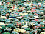

|
 | ||
|
manifestació
de diumenge 23/02/03 per exigir que fets com els desencadenats arrel de l’enfonsament del Prestige no es tornin a produir MAI MÉS |
|
L'escriptor
gallec Manuel Rivas va llegir ahir una declaració, Manifesto da
Dignidade,
al final de la multitudinària manifestació de Madrid, en què exigia responsabilitats al Govern central. El text següent és un extracte del llarg discurs de Rivas. |
|
"Aquest és una acte de reivindicació, una mobilització en defensa del mar, de la seva gent, i de la democràcia. Però és també un acte de trobada fraternal amb l'esperit que un altre món és possible en moltes coses. Ens mou la voluntat responsable, l'exigència moral de decidir sobre els assumptes públics que afecten la nostra vida. El nostre nunca máis avui es fa extensible als actes d'inhumanitat. És un nunca máis a la suspensió de les consciències i a la producció de l'odi. És un nunca máis al terrorisme que destrossa vides i convivència. És un nunca máis a les dictadures i als fanatismes. És un nunca máis als mandataris posseïts per l'ardor guerrer i un nou esperit imperial. És un nunca máis a la guerra. Un No a la guerra.
MERCADERIES PERILLOSES Però, ¿poden pilotar correctament l'Administració pública tots aquells que no creuen en la necessitat i l'eficàcia dels serveis públics? Per l'interès vital de protegir el nostre medi ambient, l'ecosistema marí no es pot escatimar en dotacions públiques per al salvament, la prevenció, la descontaminació i, dues coses molt importants, fons per ampliar la protecció d'espais naturals i la investigació als nostres centres i les nostres universitats. TARD
I MALAMENT |
Però cada dia que passa és el testimoni de càrrec de la irresponsabilitat existent, un permanent informe dramàtic que denuncia l'obstinació del Govern sobre la seva actuació. Som hospitalaris, però no volem conviure amb el chapapote. Diguin-nos la veritat. Diguin-nos que serà un any dur. Que serà complicadíssim extreure el fuel. Però posin-se ja a treballar. No ho ajornin sine die. Convoquin la comunitat internacional per fer front al desastre del Prestige. Aquesta és la nostra guerra. La guerra de la qual aquest Govern s'escapa. Aquesta és la Marcha da Dignidade. D'entre les aus polvoritzades amb el petroli, hem rescatat el patrimoni més valuós d'un poble. La llibertat i la dignitat. SENTIMENT
CIUTADÀ CANVIAR
EL RUMB La llibertat té el gust salat del mar. Pel mar, per la pau, per la democràcia, en un Madrid que té gust de mar, el 23 de febrer del 2003, ¡Nunca Máis! " |
| informació recollida a 'El Periódico de Catalunya' - Juan Manuel Prats |
|
|
|